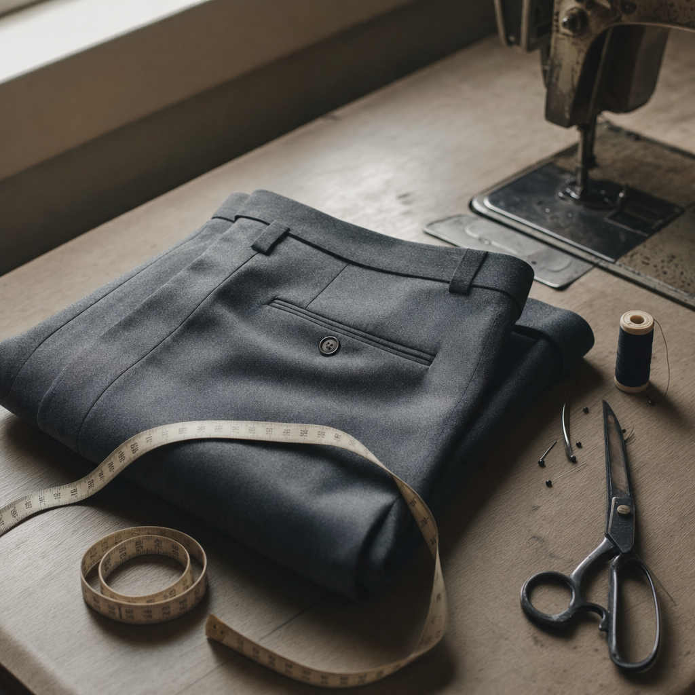

A volunteer-collected ledger of every item brought to a Repair Cafe shows that whether a thing can be saved is mostly a property of its design — and a tiny but rising chorus of fixers is now asking ChatGPT for help.
Volunteers at Repair Cafes around the world have logged 178,749 repair attempts since 2015. Sixty-three percent of those items got fully fixed. Another 13% got partly fixed. About a quarter — 43,112 specific objects — were declared dead on arrival.
Whether your thing makes it through depends almost entirely on what kind of thing it is. Knives and scissors are saved 97.5% of the time. Trousers, 96.0%. Garden shears, 95.4%. Printers, 36.8%. Electric kettles, 39.9%. The dataset draws a hard line: things you can sharpen, sew, or unscrew end up fixed; things with sealed circuit boards end up in landfill.
This is what planned obsolescence looks like in microcosm. Each of those 178,749 rows is one person's small attempt to reject the throw-away default — and one volunteer's note about whether the object's design let them succeed.
On 18 October 2009, in a converted theater in Amsterdam-West, a Dutch journalist named Martine Postma held the first Repair Cafe. She had become preoccupied, after the birth of her second child, with how much serviceable stuff Europeans throw out. The fix she invented was social: invite neighbors with broken things, pair them with volunteer fixers, serve coffee.
Sixteen years later there are nearly 3,200 Repair Cafes in more than forty countries. Many log every item they touch into Repair Monitor, the foundation's voluntary dashboard. The TidyTuesday 2026 dataset is the raw row-level export of that dashboard — 447 branches across 25 countries, including the free-text fields where volunteers write what was wrong, what they did, and what stopped them.
Activity has compounded into a hockey stick. Twenty-eight repairs were logged in 2015. By 2019 that grew to 15,491. COVID closures cut volume in half during 2020 and 2021, then growth resumed: 29,406 repairs in 2023, 39,981 in 2024, 45,165 in 2025. Volunteer reach roughly doubles every two years.
repairs.csv, Repair Monitor.Two items dominate the door: coffee makers (10,770 attempts) and vacuum cleaners (10,284). After that come trousers (6,769), bicycles (4,887), and sewing machines (4,614). The list is sticky — the foundation reported the same two leaders in their 2018 analysis.
The Netherlands accounts for 50.8% of all logged repairs in this dataset. Half of those coffee makers are Dutch coffee makers, and the most common Dutch coffee maker is a Senseo. Read the rankings with that in mind: this is what breaks in the rich world, weighted toward the country that invented the cafe.
Take vacuum cleaners. Volunteers logged 10,284 attempts and salvaged 61% of them. Of the failures, the largest single tag is just "No way to fix the product" (7.5%). Right behind it: "Spare parts not available at repair session" (7.3%), "Spare parts too expensive" (6.0%), "Too worn out" (5.9%), and — telling — "No way to open the product" (3.8%). Modern vacuums are built with plastic clips and proprietary screws that resist amateur disassembly.
Across all 65,999 failed and half-fixed records, the same pattern holds. Spare-parts problems collectively (not at session, not on market, too expensive) account for 9,042 tags — the single largest barrier when grouped together. The 2018 foundation analysis warned about this: in 46% of unsuccessful repairs, the blocker was a non-replaceable broken part. Six years later, parts are still the wall.
The pattern divides cleanly along electrical lines. In electric tools and electric household appliances, 7–8% of all attempts (not just failed ones) get blocked by missing or expensive parts. In textile, that number is 0.5%. The EU's new Right-to-Repair Directive 2024/1799 — entering force in member states by July 2026 — was written for exactly this asymmetry: it requires manufacturers of covered products to make spare parts and repair information available "within a reasonable time and price."
Holding the product type fixed and looking just at brands, the gap is stark. Among vacuum cleaners with at least 100 logged attempts, Henry succeeds 69.2% of the time. Miele, 66.0%. Philips, 64.8%. Dyson — the brand most associated with premium price and proprietary design — sits last, at 47.4%, across 1,202 attempts. Among coffee makers, Philips (the Senseo) leads at 59.5%; Braun comes last at 30.9%.
Volunteer brand strings are noisy and Dyson units may also skew newer. But the spread — twenty-two percentage points between top and bottom — is too large to wave away as sampling chance. There is a real, measurable cost to design choices that lock fixers out.
Plot success rate against the item's age and you get a U-shape. Brand-new items (0–1 years old) get fixed 67% of the time. Then success drops, bottoming out around 6–15 years (around 56%). Then it climbs again. Items 21–30 years old are repaired 61% of the time. Items 31–50 years old, 62%. Items over fifty, 63%.
The vintage rebound makes physical sense once you read what those old items are. Of the 14,112 items in the dataset aged twenty years or more, the top categories are sewing machines (1,212), clocks (553), vacuum cleaners (483), radios (471), turntables (356), and bicycles (331). These are pre-throwaway-era objects, made when steel cost less than electronics, with replaceable parts and accessible internals. They were built to last and they are still standing.

Volunteers can record where they got their repair information. YouTube has been the dominant external source since the dashboard began — about half a percent of all logged repairs cite it as a source, fairly stable across years. Generative AI is brand new. Zero mentions before September 2023. Two mentions in 2023. Eight in 2024. Fourteen in 2025. Two in the first eight months of 2026.
The verbatim values are revealing. Volunteers wrote it as "chat gpt", "Chat GPT", "CHAT GPT", "chatgpt", "Chat gpt" — six different capitalizations of the same product. Others logged "WWW.OPENai.COM", "AI Perplexity", "perplexity et manuel" (using AI alongside a paper manual), and one even pasted a complete OpenAI conversation share URL. YouTube is named consistently across thousands of rows. AI is so new that volunteers have no agreed-upon name for it.
The total volume — 26 AI mentions versus 843 YouTube mentions — is tiny. But this is the first time a volunteer-collected, time-stamped, global dataset has captured the entry of generative AI into the practical toolkit of amateur fixers. The graph is not large; it is just the beginning of one.
repair_info_source / repair_info_url. Note the dual axis: counts, not percentages.One of the cleanest stories in the data hides inside the third-most-common item. Trousers and pants got 6,769 attempts, and 96% of them ended in success. Read the defect text and you find out why: "te lang" (615 times), "korter maken" (195), "pijpen te lang" (99), "too long" (87). The dominant trouser "repair" is hemming. People are bringing in clothing to be altered — to fit a body — not because anything is broken.
This is its own quiet finding. The textile category has a 92.3% success rate, and a sizable share of that is alteration disguised as repair. The line between "fix" and "tailor" turns out to be blurry; the line between "fixable" and "unfixable" is much sharper, and it is drawn by the manufacturer.
The free-text "why we couldn't fix it" field, read in bulk, is unexpectedly moving. A coffee maker: "product is van inferieure kwaliteit, slecht te repareren" — the product is of inferior quality, badly repairable. A printer: "Vital Component Failure. Not available to purchase." A laptop: "Het apparaat is te oud om nog te repareren" — the device is too old to be repaired. A radio: "Schema nodig, niet te vinden" — circuit diagram needed, cannot be found. An amplifier the volunteer dragged into the cafe: "versterker heeft computer die alles checkt, maar wil niet starten, ook vol sigarenrook" — amp has a computer that checks everything but won't start, also full of cigar smoke.
These are not statistics; they are tiny ethnographic field notes. Each row is a small story about a specific object meeting a specific obstacle. The Repair Monitor dataset is rare in capturing this voice at all — manufacturer warranty data never records what the user thinks happened.
The Repair Cafe Foundation, drawing on a master's-thesis estimate by British researcher Steve Privett, says one successful Repair Cafe fix prevents about 24 kilograms of CO₂ emissions — mostly from the manufacture of the replacement that didn't have to be made. Apply that figure to the 112,776 successful repairs in this dataset and you get 2,707 tonnes of CO₂ prevented. The cumulative line tracks the volume curve: a tonne by 2015, 213 tonnes by 2018, 1,287 by 2023, 2,594 by 2025.
That is one community-collected sample of one global movement. The foundation estimates the full network — 3,200 cafes — could save more than 8.5 million kilos of CO₂ a year if all branches were active. Three months after the most recent rows in this dataset, EU member states must transpose Right-to-Repair Directive 2024/1799 into law. The same volunteers who wrote "Schema nodig, niet te vinden" — circuit diagram needed, cannot be found — finally have a regulator behind them.
Volunteers also rate each item on a 1-to-10 repairability scale — easy to fix, hard to fix. The score is monotonic: items rated 1 are fixed 13.7% of the time, items rated 10 are fixed 85.8%. The repairability score is, in effect, a volunteer-given anti-obsolescence rating. It works.
If you remember one thing from this dataset, make it this: fixable is not a property of the object. It is a property of the design. Trousers in the 1880s and trousers in the 2020s have the same fixability — needle and thread will hem either of them. A coffee maker in the 1980s and a coffee maker in the 2020s do not. The Repair Cafe data, row by row, is the largest community-collected proof of where that gap is, what it costs us, and which manufacturers are quietly responsible.